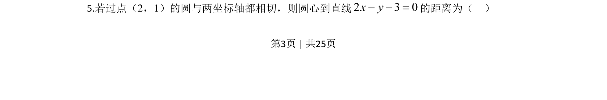
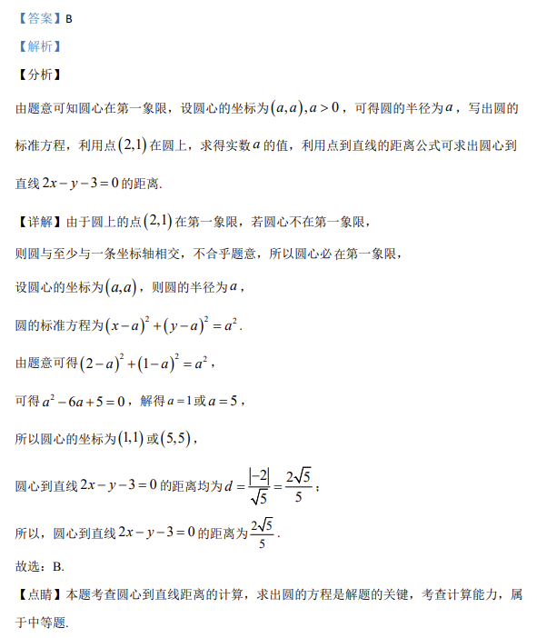

2020-理-05
吉林2020卷新课标Ⅱ理题5题型选择难中
考点：圆标准方程 点到直线距离公式 待定系数法
题面

摘要
根据条件求圆心坐标，再利用点到直线距离公式计算圆心到直线距离。
关联考点
答案与解析

📄 原 PDF 第 3 页：素材/真题/吉林/2008-2024·（吉林）数学高考真题/2020年高考数学试卷（理）（新课标Ⅱ）（解析卷）.pdf
题干文本
5.若过点（2，1）的圆与两坐标轴都相切，则圆心到直线2 3 0x y- - =的距离为（ ）
解析文本